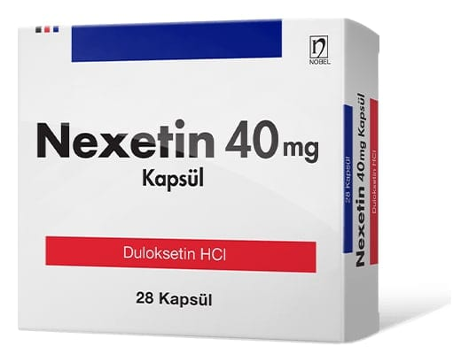

Nexetin 40 mg Kapsül, 28 Adet

Ne için kullanılır
KT · Bölüm 1• NEXETİN opak turuncu gövde / opak mavi kapaklı sert jelatin kapsüllerdir. 28 kapsüllük ambalajlar halinde bulunur. • NEXETİN kapsülleri mide asidine karşı koruyucu bir tabaka ile kaplı duloksetin hidroklorür pelletleri içerir. • Duloksetin, sinir sisteminde serotonin ve noradrenalin düzeylerini artırır. • NEXETİN kadınlarda stres üriner inkontinans (SÜİ) tedavisi ve SÜİ’ın baskın olduğu MÜİ (mikst üriner inkontinans) tedavisi için ağızdan alınan bir ilaçtır. • MÜİ (mikst üriner inkontinans), SÜİ (stres üriner inkontinans) semptomlarının sıkışma tipi üriner inkontinans (ani tuvalete gitme ihtiyacı ile beliren ve tuvalete gitmeden idrar kaçırma) semptomlarıyla birlikte olması durumudur. Bu belge 5070 sayılı Elektronik İmza Kanunu uyarınca elektronik olarak imzalanmıştır. Doküman https://www.turkiye.gov.tr/saglik-titck-ebys adresinden kontrol edilebilir. Güvenli elektronik imza aslı ile aynıdır. Dokümanın doğrulama kodu : 1S3k0ZmxXRG83Z1AxZW56ZW56ZW56 Bu belge 5070 sayılı Elektronik İmza Kanunu uyarınca elektronik olarak imzalanmıştır. Doküman https://www.turkiye.gov.tr/saglik-titck-ebys adresinden kontrol edilebilir. Güvenli elektronik imza aslı ile aynıdır. Dokümanın doğrulama kodu : 1S3k0ZmxXRG83Z1AxZW56ZW56ZW56
• Stres üriner inkontinans gülme, öksürme, hapşırma, ağırlık kaldırma ya da egzersiz gibi fiziksel aktiviteler sırasında hastanın istemeden idrar kaçırması olarak tanımlanan tıbbi bir durumdur. • NEXETİN güldüğünüzde, hapşırdığınızda ya da fiziksel aktivite sırasında idrarı nızı tutmayı sağlayan kasların gücünü arttırır. • NEXETİN’in etkinliği, Pelvik Taban Kas Egzersizi olarak adlandırılan egzersiz programı ile artar.